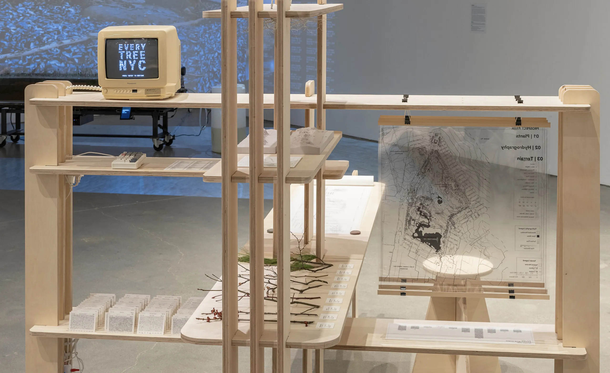
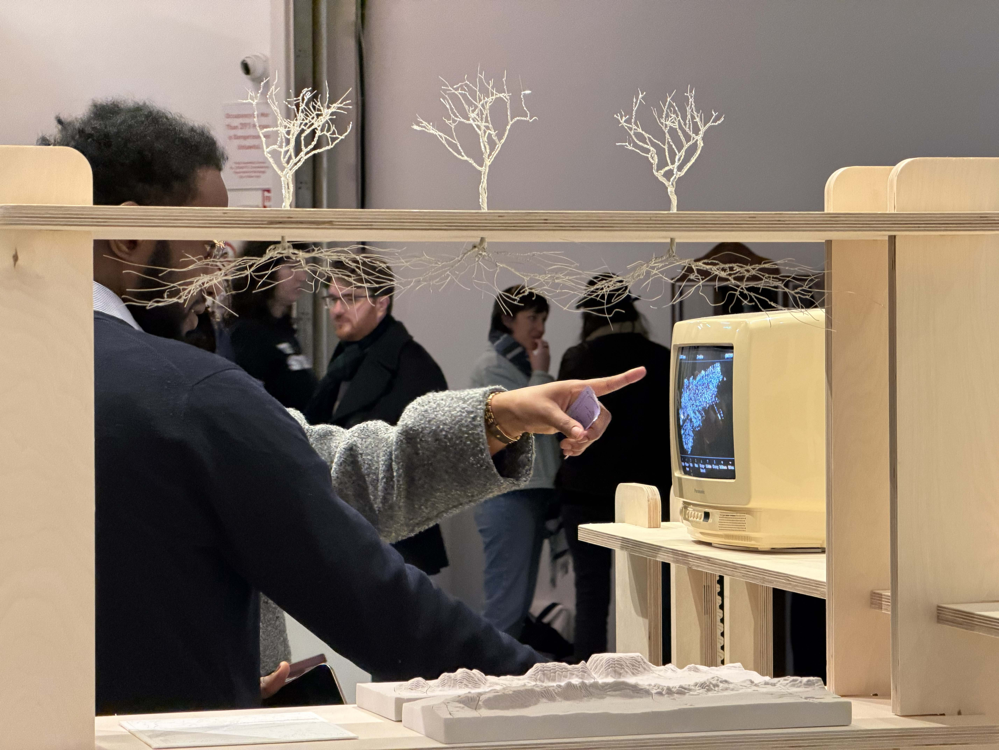
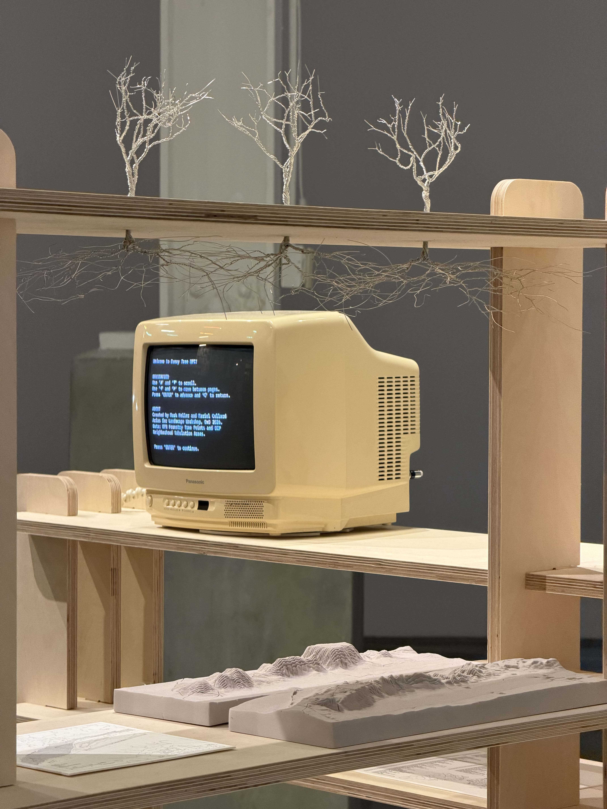
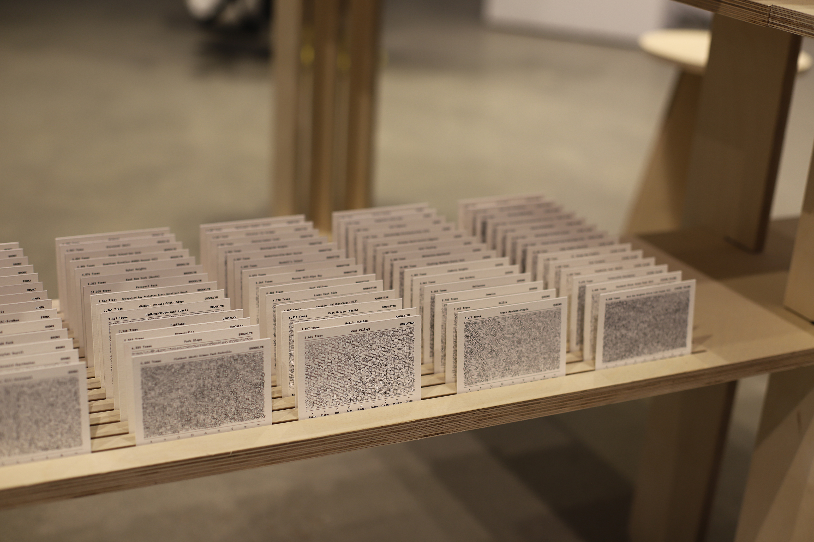
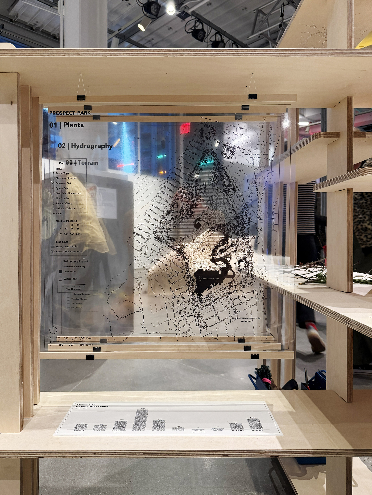
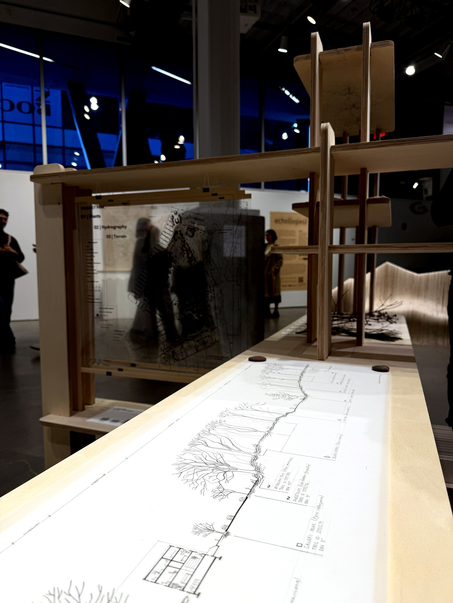

Landscape Workshop
[2026]
Landscape Workshop invites the public to experience the varied ways landscape architects use geospatial data to study, draw, and ultimately produce spaces of ecological diversity within New York City. The piece explores how we reconstruct the urban forest not just through individual trees, but in conjunction with other ecological datasets as well as on-site ground truthing. Through digital and analog components, the installation mirrors the hybrid practice of landscape architecture: drawing with pencil and mouse, registering through data and sensory experience. A love letter to the craft, the piece reimagines the spatially distinct settings of computer, modelshop, garden, and desk as one amalgamated landscape workshop, across which open data represents the city through digital and physical forms. Part of Echo(logies), Data Through Design 2026. On display at BRIC House, Brooklyn, NY, March 21 - April 5, 2026. Collaborator: Mariel Collard Arias








